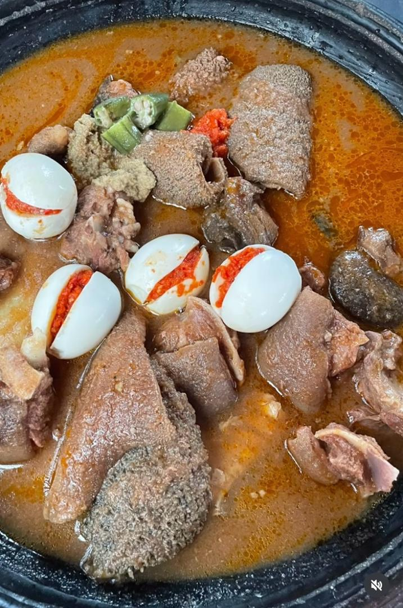

Jollof Rice

Jollof rice is a popular Ghanaian dish, a flavorful mix of rice, tomatoes, and spices. It is a beloved meal across West Africa.
Fufu and Light Soup
Fufu, paired with a variety of soups such as light soup or palm nut soup, is a staple dish enjoyed by many in Ghana.